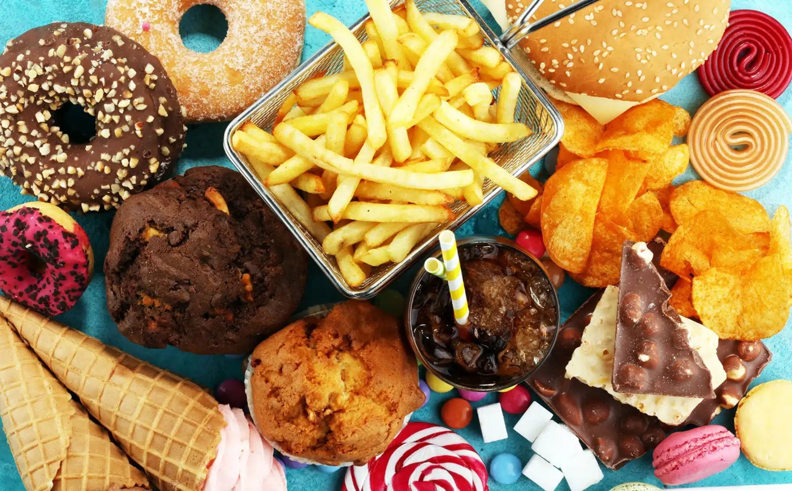

Kebiasaan Makan Tidak Sehat
Mengkonsumsi makanan tinggi gula dan lemak dapat menyebabkan obesitas, diabetes, dan penyakit jantung.
Kurang Tidur
Berpotensi menurunkan sistem imun, meningkatkan risiko depresi, gangguan konsentrasi, serta memengaruhi produktivitas harian. Kurang tidur juga dapat menyebabkan kelelahan kronis yang membuat tubuh rentan terhadap infeksi. Dalam jangka panjang, kurang tidur bisa berdampak pada peningkatan risiko hipertensi, diabetes, dan penyakit kardiovaskular.

Tidak Berolahraga
Mengakibatkan otot melemah, menurunkan kebugaran fisik, serta meningkatkan risiko osteoporosis dan hipertensi.
Gaya Hidup Sedentari (Malas Bergerak)
Dapat menyebabkan penurunan fungsi metabolisme tubuh, peningkatan berat badan, serta gangguan kardiovaskular.